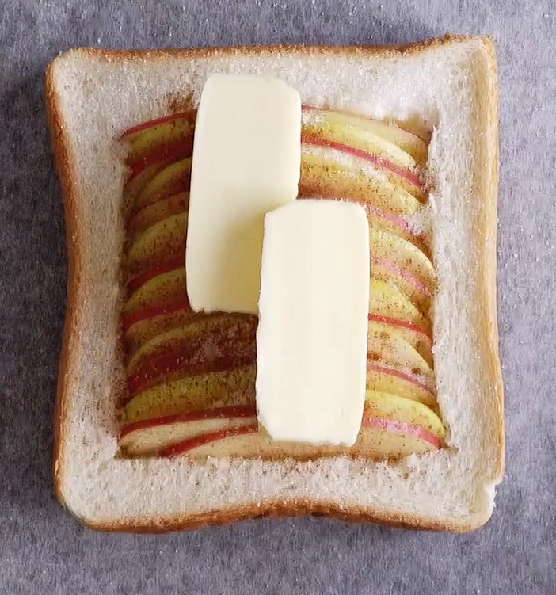

Apple Pie Toast
Ingredients
1 slice thick bread
Cream cheese
1/2 red apple
1/2 green apple
20 grams butter
2 tablespoons sugar
Instructions
Prepare the Apple:
Wash, peel, and dice the apple into small pieces. You can leave the peel on for added nutrition and texture.
Cook the Apple:
In a pan, melt the butter over medium heat. Add the diced apple and
sauté for about 3-4 minutes until they start to soften.
Add Flavor:
Stir in the brown sugar, and a pinch of salt. Cook for an
additional 2-3 minutes until the apples are tender and caramelized.
Assemble the Toast:
While the apples are cooking, toast the slices of bread until they're crispy.
Layer the Toast:
Spread the caramelized apple mixture evenly on top of each slice of toasted bread.
Optional Drizzle:
For added sweetness, drizzle a bit of honey or maple syrup over the apple mixture.
Serve Warm:
Serve your apple pie toast immediately while it's warm and enjoy your quick and budget-friendly dessert or snack.